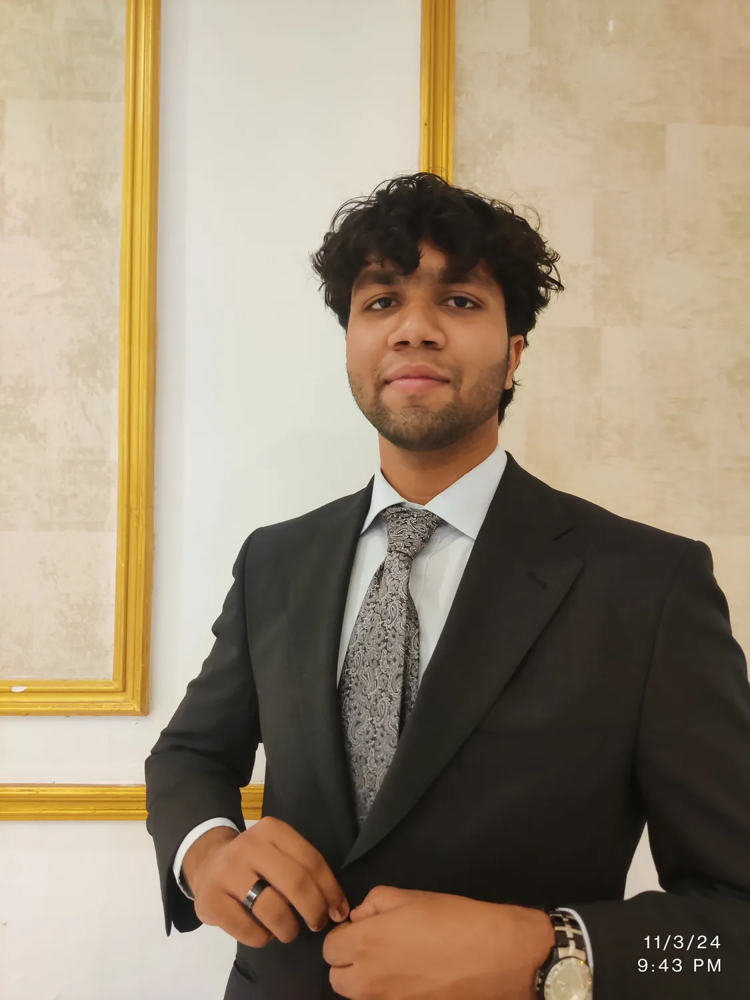

Computer Science at TRU
Developing foundations in programming, algorithms, systems thinking, teamwork, and technical communication.
About me
I’m learning how to build software that works well, communicates clearly, and respects the people using it.

PakistanI’m Ibrahim, a Computer Science student at Thompson Rivers University. I’m interested in the whole path from understanding a problem to shipping a thoughtful solution.
Growing up in Pakistan and studying in Canada has given me more than a change of scenery. It has made me attentive to context: who is in the room, what assumptions a product makes, and how differently people can experience the same system.
That perspective shapes my technical work. I enjoy building interfaces, thinking through requirements, and explaining decisions so another person can understand or improve them.
Developing foundations in programming, algorithms, systems thinking, teamwork, and technical communication.
Supporting awareness efforts in children’s libraries and youth centres, connecting technical ambition with social responsibility.
Two practices that sharpen patience, structure, expression, and the ability to notice what feels slightly out of place.
How I work
I’m still growing my toolkit. These are the habits I want every project to demonstrate while that toolkit expands.
I ask what the system needs to accomplish, who depends on it, and what could go wrong before choosing technology.
Clear navigation, readable code, and useful documentation are all forms of respect for the next person.
I would rather show a smaller working project with lessons learned than decorate an unfinished idea with large claims.
Continue the story